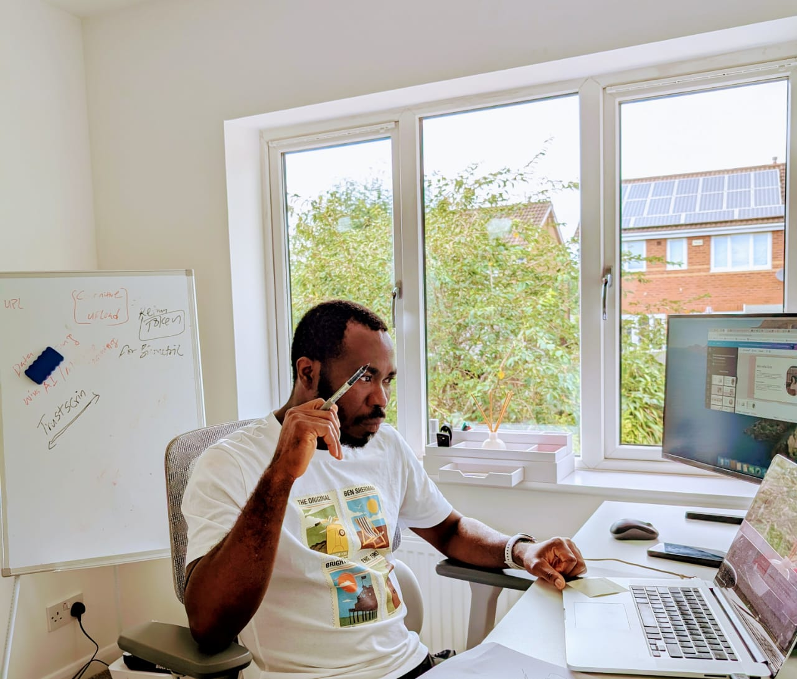

Focus

Product Manager | Front-End Developer | Content Writer
Akpos Sarakiri
I'm a product manager! Once upon a time, I was a front-end developer who builds websites that feel human. In fact, I still build websites that feel human when called upon. My work lives at the intersection of clean code, strong UX, and small interactive details that make a site memorable.
- 12
- Shipped projects
- 6
- Years building for the web
- 100%
- Responsive by default
I've mastered the art of turning vision into reality. I bridge strategy, user needs, and execution. Defining what we build, why we build it, and how it creates real value. From discovery and roadmapping to launch and iteration, I orchestrate cross-functional teams to ship products that are not only useful but delightful, intuitive, and built to win. It’s equal parts detective, decision-maker, storyteller, and shipper. Always keeping the user at the center while balancing business goals and technical realities. In short: I make sure the right things get built the right way.
Selected Work
Recent projects
Exam Sprint
APP
A Smart Learning Platform
Managed the end-to-end development of a smart learning platform, built to help working profesionals and students prepare for exams with interactive study materials, keyboard-friendly controls, and mobile-ready breakpoints. Designed and built the Frontend.
Predict395
Platform
A Football analytics Platform
Designed and developed a football analytics dashboard with dense charts, interactive states, and keyboard-friendly controls. Managed the end-to-end product development lifecycle, from discovery and roadmapping to launch and iteration.
TrustScrin
Branding
Portfolio Rebranding
Reframed TrustScrin's online presence with richer storytelling, simpler navigation, stronger typography, and a cleaner inquiry flow. Created a more engaging and intuitive experience that better communicates the brand's value and expertise.
About
Products that feel considered
I’m a product manager and front-end developer with a passion for crafting digital experiences that are not only functional but also delightful. With a background in both design and development, I bring a unique perspective to product creation — one that values clean code, intuitive UX, and the small interactive details that make a product memorable.
My journey began in front-end development, where I honed my skills in HTML, CSS, and JavaScript to build responsive websites and applications. Over time, I found myself drawn to the strategic side of product creation — the process of defining what to build, why it matters, and how to bring it to life. This led me to transition into product management, where I now orchestrate cross-functional teams to ship products that are not only useful but also delightful and built to win.
2026
Leading product strategy and execution for a high-growth startup.
Building polished portfolio and marketing sites with strong mobile UX.
2025
Shipped a task management app with smart sorting and interactive states.
Developed a comprehensive product roadmap and led cross-functional teams to execution.
2024
Crafting intuitive user experiences with a focus on accessibility.
Managing the end-to-end product development lifecycle for a growing team.
2023
Was part of the product team that designed and launched an analytics dashboard with dense charts and keyboard-friendly controls.
Refreshed the online presence of a design studio with stronger storytelling and cleaner inquiry flow.
2022
Started shipping personal web projects and client redesigns.
Toolkit
Core skills
Product Management
Roadmapping, user research, GTM strategy, cross-functional leadership, Agile, Scrum, Lean, Kanban, Waterfall
Front-end
HTML5, CSS3, responsive layouts, JavaScript, accessibility
Design
Wireframing, visual hierarchy, design systems, UI polish
Workflow
Git, GitHub, command line, iterative prototyping, deployment, Jira, Slack, Miro, Figma, Sketch, Productboard, UserTesting
Download My Resume
Get a detailed overview of my experience, skills, and background.
📄 Download Resume